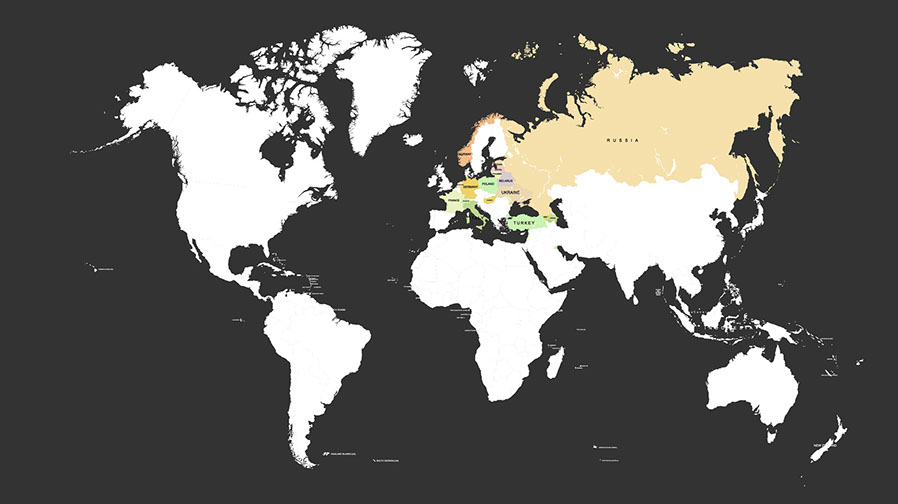

Hello. My name is Arthur Gareginyan. I'm Ukrainian, 30 years old. Originally from Kropivnickiy, Ukraine, but currently I live in Moscow, Russia. I'm happily married to beautiful Russian girl Milena.
————————————————— Work —————————————————
I'm an independent designer, software and web developer (full stack software engineer) who cares deeply about beautiful design and elegant code. I’m fascinated by graphics and design, and for several years I’ve been working on projects for many people and organizations. I am the founder of techno-blog «My Cyber Universe», the author of several themes for different platforms, the author of more than a dozen FREE and Premium plugins for CMS WordPress. From May 2013 to May 2016 I was the owner of web-hosting «Anarcho Hosting». I am also involved in the development of different open source software.
My intention is to create projects that will make this world a better place. I am really passionate about my work, I like what I am doing and hope that you will be enriched by my projects too.
Now I’m in the process of finding an interesting job, preferably in USA, Canada or Israel. I have the experience of living in Switzerland, Norway, Lithuania, Latvia and some other countries. I’m very sociable  . I’m always interested in hearing of project ideas and opportunities, so feel free to contact me.
. I’m always interested in hearing of project ideas and opportunities, so feel free to contact me.
———————————————— Education ————————————————
1998 - I went to The Russian Gymnasium at The State Russian Museum, St. Petersburg (Grammar School №199) with historical bias. There I fell in love with the history.
2003-2005 - I enrolled in the Lomonosov Moscow State University (MSU) at the faculty of History. But after more than two years of study in this great University I was faced with financial difficulties, and I was not able to finish study, so I don't have the degree. My education was largely in history, but also in philosophy and languages. I was a Deputy headman of the group. MSU is my alma mater.

—————————————— Honors & Awards ——————————————


Diploma of II degree. The winner of the district contest of creative works "From the grain of good - the flower of kindness". Creative work in English, an essay.
Date: May 2002
Organization: The Department of public education of the Russian Federation
Place: Moscow, Russia
Diploma for 1st place in the district contest "My future profession".
Date: May 2002
Organization: The Department of public education of the Russian Federation
Place: Moscow, Russia
Diploma for 2nd place in the open championship of the club "Удар" (Kick) on Thai boxing.
Date: April 2003
Organization: Club "Удар"
Place: Ramenskoye, Russia
Letter of thanks to my parents.
Date: June 2002
Organization: school №29, Moscow, Russia.
Characteristic.
Date: June 2002
Organization: school №29, Moscow, Russia.
<
>
x
The winner of the district contest of creative works.
May 2002 - Moscow, Russia - The Department of public education of the Russian Federation
Diploma of II degree. Creative work in English, an essay. Theme essays: "From the grain of good - the flower of kindness".
1st place in the district contest of creative works.
May 2002 - Moscow, Russia - The Department of public education of the Russian Federation
Diploma for outstanding achievements in the field of literary creativity. Theme essays: "My future profession".
2nd place in the open championship of the club "Удар" (Kick) on Thai boxing.
April 2003 - Ramenskoye, Russia - Клуб "Удар"
Diploma.
Letter of thanks to my parents.
Date: June 2002
Organization: School №29, Moscow, Russia.
Characteristic.
Date: June 2002
Organization: School №29, Moscow, Russia.
——————————————— Personal Life ———————————————
I am a Designer, Tech writer, Software engineer, Blogger, Techie, and Explorer, tinkering with new technologies and existing systems to change the world. I very much love to engage in reverse engineering.
In my spare time, I like to ride on a skateboard. I love motorcycles. Previously I owned a motorcycle Aprilia RS. Then I had a sporty BMW Z3 roadster, but I was in love with two-wheeled beasts.
I love my beautiful wife Milena. Family is the most important thing for me. Family is what calms me.
I love to travel and have already many traveled. I was in Russia, Ukraine, Belarus, Armenia, Azerbaijan, Switzerland, Germany, Poland, Norway, Turkey and many more countries. I have hitherto spent a considerable part of my life living outside my homeland, mostly in Russia.

I was raised bilingual, my native languages is Russian and Ukrainian. I know English and I know a little Armenian language. Also I try to learn more languages, like Spanish and German.
I am an introvert, so while I love talking to people, I feel my best and think clearly when I'm alone and free of distractions.
My interests are:
- Reading
- History
- Travel
- Sport cars and motorcycles
- My wife
- Graphics
- Design
- New technologies
- Computers
- Programming (Coding & Engineering)
- Tinkering
- Robotics
... and many more.
—————— A little history about my familiarity with computers —————
Первое моё знакомство с компьютером произошло в 1995 году на уроках информатики школы города Будапешт в Венгрии. Тогда были совсем другие компьютеры и операционные системы, не похожие на сегодняшние. Там нас обучали архитектуре компьютера и азам пользования им. Я быстро обучился и в результате преподаватель назначила меня её помощником и замещающим. Я быстро выполнял классные задания, после чего преподаватель обучала меня тому, чего не было в классной программе. Я помогал другим ученикам в освоении компьютера.
В 1997 году Я получил в подарок от родителей мой первый персональный компьютер. Это был компьютер марки Micro… (уже не помню полное название) с процессором “MMX 133” работающем на частоте 133 МГц c операционной системой “Windows 95”. Моему счастью не было предела.
Первый навык программирования Я получил на уроках информатики в замечательной гимназии города Санкт-Петербург в 1998 году. Нас обучали писать 4-ёх битные аркадные игры. WYSIWYG редакторов (аббревиатура от англ. “What You See Is What You Get” – “Что видишь, то и получишь”) тогда ещё не было, поэтому мы писали код в терминале.
В подростковом возрасте Я увлекался переделкой 16-ти битных аркадных игр и написанием новых уровней/карт для 3D шутеров и 2D военных стратегий. Это было просто ради развлечения но при этом Я обучился некоторым важным навыкам в программировании, а также это привело меня к изучению кибер-безопасности. Для овладения этим навыком, в целях обучения, Я постоянно взламывал различного рода программы для операционной системы Windows. Так же Я временами взламывал разного рода устройства, такие как “Sony Play Station 1”, “Xbox 1”, видео-плееры, сетевые маршрутизаторы, телефоны и многое другое. Это был неоценимый опыт. Так Я достиг понимания методов взлома, а следовательно и защиты от кибер-атак.
Важное уточнение: Я производил взлом только в ознакомительных целях или по просьбе/заказу владельца вебсайта или устройства! Я не нарушаю и не планирую нарушать законы!
После многих лет использования платных операционных систем и программ (раньше приходилось покупать дорогостоящие большие картонные коробки в которых находился CD диск/и) Я заинтересовался свободным программным обеспечением распространяемым через интернет. Я стал активно пользоваться операционными системами на базе ядра Linux. Так Я начал программировать под ОС Debian и Ubuntu.
Теперь у меня позади множество сменённых компьютеров и операционных систем. Сегодня, для каждодневных задач (в домашних целях) Я использую устройства марки Apple (MacBook Air, iPad4 и iPhone5) с операционными системами “Mac OS X” и “iOS”, а для труда Я использую MacBook и PC+Linux.
В 21-ый век человечество вошло с компьютеризованными заводами, офисами и даже жильём и транспортом. В этом веке компьютеры встречаются нам по всюду, а значит работы у меня предостаточно :)
Copyright © 2015-2017 Arthur Gareginyan. All rights reserved.